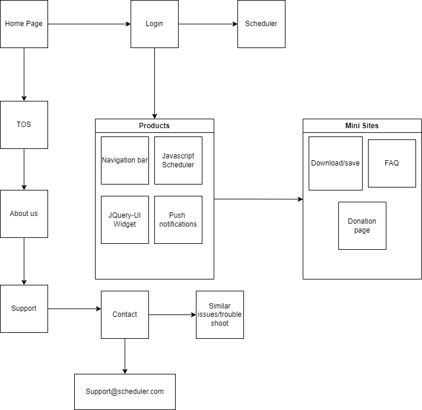

Project 1
Brandon Jones
3/18/2023
Requirements and Design Document
Project overview:
- The application is a schedule tracker for a user who needs to keep track of their tasks.
- The intended users of this website are students and people with a job/career who want to be notified of specific events on certain days
- Content of the website will be a home page with a login and after you log in you will be greeted with your schedule that you can add to or remove from, it also gives the option of
push notifications for the user along with a navigation bar for easy use.
Client Information:
- Name of the client is Austin
- The client is associated with Eastern Carolina University
- Email: Private
- Phone Number: private
Site Map

Page Design
- Home page: The purpose is to be the launch page of the Site
The audience of this page will be anyone checking out the website to use it.
The content on this page will be the TOS, About us, and the support section. We will
ask the user to login. It will need the form login validation and It wont navigate unless you
decide to login.
- Login: The purpose is to be the login page of the site. The audience of this Page will be
anyone going to login to the website or sign up for the scheduler. The content of this Page
will be the username and password of the user. It will need the form login validation and will navigate
to the scheduler when logged in. It will save data of the users login information.
- Scheduler: The purpose is to be the scheduler page of the website. The audience of this page will
be the user who has signed up and has kept track of their schedule. The content of this page will be
the schedule that you can edit and add to as needed. It will need a JQuery plugin and it will navigate you to the home
page if you decide to go back to the home page. It will save data when you decide to edit the schedule as needed.It is a
jquery plugin.
- FAQ: The purpose of this page is for frequently asked questions to help anyone out who has an inquiry about the website.
The audience of this page is for people who have questions that have been asked a numerous amount of times and have been
addressed in the appropriate spot so no more of the questions have to be asked to the creator. The content will be a list
of questions which will be then followed by the answer to the specific question. There will also be a submission text box
for any question that hasnt been asked/answered yet. It will save data when the user inputs a question.
- Donation: The purpose is to be a donation page for the creator of the website.
the audience of this page will most likely be anyone wanting to donate or support the creator. The content on this Page
will be a donation box with amounts that you can select from, from cents all the way to $50 donations. It will need validation
and it will navigate back to the donation page after donation with a thank you message. It will save data but not your payment data
as that will be kept private and it will send a receipt to your email. It will use a jquery plugin.
- Download/save: The purpose of this page is to serve as the option to download or save your schedule if you feel it is complete
and you no longer need to update it or if you choose to save a specific week. The audience will be users who have this specific need,
or users who want to print their schedule out and use it in real life. The content on this page will be a download button
that will allow you to select the specific week(s) or month(s) you want to download of your schedule. It will save the data of the selected
page you choose to download and it will download it as a jpg/png. It will use a JQuery plugin.
Dynamic Functionality on the website
The dynamic functionality i will implement using javascript will be forms, for example a form validation with limited login attempts for the login page
the event calendar that will be needed to make the scheduler page, the push notifications that will give the user the option to set reminders
and notifications to the users computer to update them about specific events, a JQuery plugin for the donation page and the download page, and then
javascript for the FAQ page.
Websites I will use to implement the features:
- Login form validation
- JQuery calendar plugin
- Web push notifications
- Donation JQuery page plugin
- Download button JQuery plugin
- FAQ page.